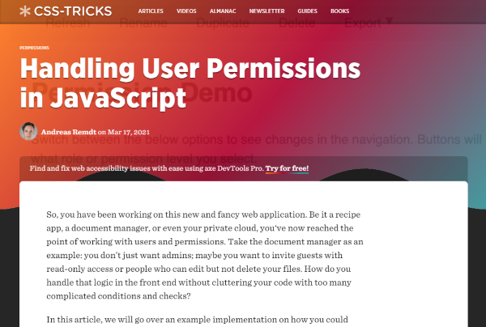
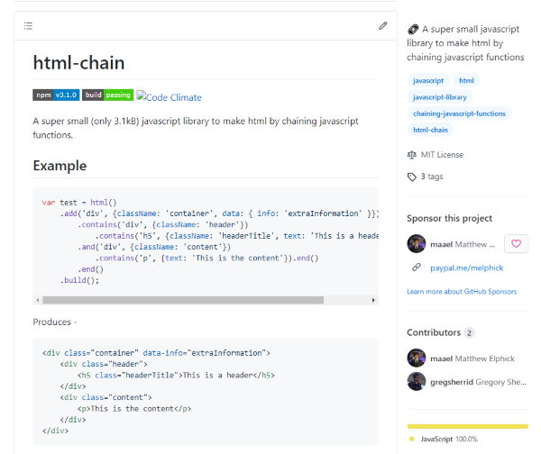
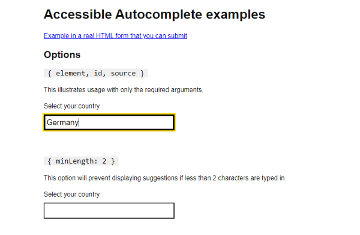
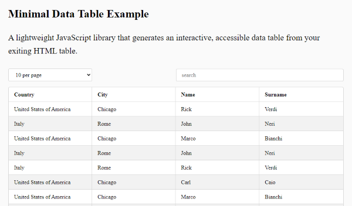
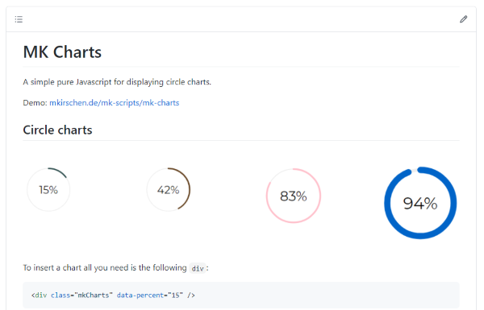
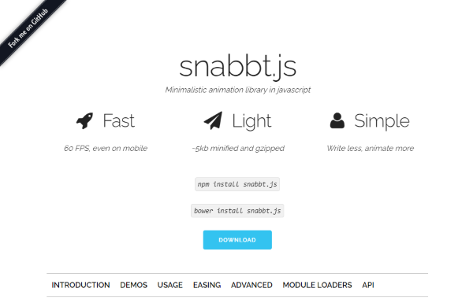
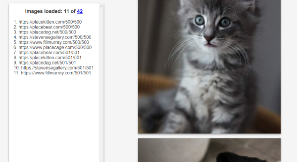

Todays Discoveries it’s all about my favourite programming language JavaScript. Some tiny tips and tricks alongside with a deep dive into ‘console’ and some helful UI libraries. Have fun…
- Beyond Console.log()
- DOMGuard - Stop scammers from the manipulating DOM
- Handling User Permissions in JavaScript
- html-chain - Make html by chaining javascript functions
- Accessible Autocomplete
- JS DataTable
- MK Charts
- Snabbt.js - Fast animations with Javascript and CSS transforms
- SimplyLazy - Pure JavaScript Image Lazy Loader
- Blury-Loading
Beyond Console.log()
by Christian Heilmannhttps://www.sitepoint.com/beyond-console-log-level-up-your-debugging-skills/
The browser console is propably the most used tool for debugging JavaScript, but most of the time we all just scatch the surface. Christian show us the power of the console.
DOMGuard - Stop scammers from the manipulating DOM
by David Wellshttps://dom-guard.netlify.app/
There are many attack vectors scammers use to draw money out of the pockets. You have to make it as difficult as possible for them. Davids idea is to protect the DOM of the browser against changes utilizing the JS MutationObserver. Clever.
Handling User Permissions in JavaScript
by Andreas Remdthttps://css-tricks.com/handling-user-permissions-in-javascript/
In case you have to intregrate a permission system into your Web App, to separate features from different user groups, Andreas post on CSS Tricks is a very good entry point into the subject.
html-chain - Make html by chaining javascript functions
by Matthew Elphickhttps://github.com/maael/html-chain
There are several ways on dealing with HTML in JavaScript. My favourite approach are literals. Matthew gives us with his library the possibility to do it in a LINQ-style by chaining commands.
Accessible Autocomplete
by Government Digital Servicehttps://github.com/alphagov/accessible-autocomplete
Many cool looking UI elements on the web are not accessible for the impaired. But especially public services has to be aware of that. Developers from the British Government Digital Service have created a full WAI-ARIA compatible library for autocomplete inputs.
JS DataTable
by Luigi Verollahttps://github.com/luverolla/js-datatable
Deaing with tables in HTML can be a mess, when you try to add some functionality like searching, sorting and paging and that also responsive. Take a nap, because Luigi has a fully functional solution for this.
MK Charts
by Marcus Kirschenhttps://mkirschen.de/mk-scripts/mk-charts/
Dashboards everywhere. In case you don’t have a specialized UI library and just want to add some circle charts to your UI, try out Marcus’ solution. Just define the values in your HTML tag and let MK Charts do the rest. Simple and easy.
Snabbt.js - Fast animations with Javascript and CSS transforms
by Daniel Lundinhttps://daniel-lundin.github.io/snabbt.js/
Snabbt is quite old in terms of the IT industry, but still worth mentioning, because it is a really light and fast solution for adding animations to your Web App. See the demos … it’s still stunning.
SimplyLazy - Pure JavaScript Image Lazy Loader
by Max (maxshuty)https://maxshuty.github.io/simply-lazy/
Lazy loading can be a must on image heavy webs and you got bazillion results while searching for the right JS library. I can recommend Max’s solution, because it’s quite tiny and has callback as well as default image support.
Blury-Loading
by S.M.Abtahi Noorhttps://github.com/19smabtahinoor/Blury-Loading
Apropos loading … maybe you want to preload your Web App’s sources completely and show the user a loading visual? Take this nice looking approach: while a percentage figure is running upwards, the background image is getting less blurry. A three-liner, but cool. Thanks Mr. Noor.


Comments